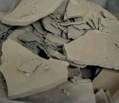
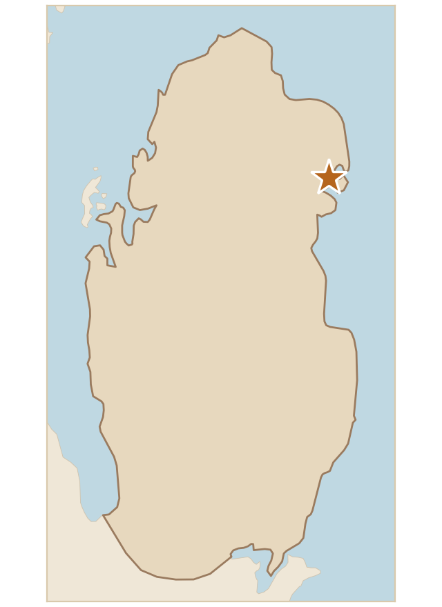

تربة تتشكل من قطع طينية جافة كبيرة متصلبة ومتشققة تصل إلى هذا الشكل بعد انجراف الغرين من سطح التربة وتجمعه في منطقة منخفضة (غالبًا في الروضات)، ولونها بني فاتح إلى بني داكن، مما يشير إلى تربة غنية بالمعادن، وتُعد نموذجية للتربة الطينية الكثيفة.
Soil made up of large, hardened and cracked pieces of dry clay, which reach this form after silt is washed away from the soil surface and collects in a low-lying area (often in the rawdat). It is light to dark brown, which indicates a mineral-rich soil, and it is typical of dense clay soil.